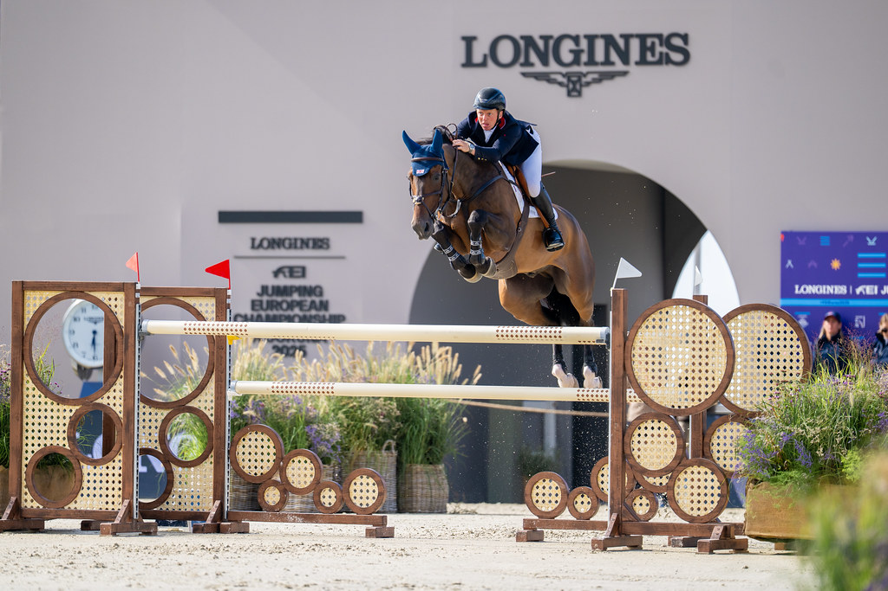

Matthew Sampson firma su segunda victoria 5* en Hickstead con One Whisper
El británico se impuso en la prueba internacional de 1,45 m del CSIO5* de Hickstead con más de cinco segundos y medio de ventaja sobre la sueca Angelie von Essen. El binomio sumó así su segundo triunfo consecutivo en el certamen británico.

Uso editorial
Matthew Sampson conquistó este viernes una nueva victoria en el CSIO5* Agria Royal International Horse Show de Hickstead con la yegua One Whisper. El británico paró el cronómetro en 63,56 segundos en la prueba internacional de 1,45 m, logrando una diferencia de 5,62 segundos sobre la segunda clasificada, la sueca Angelie von Essen con Happiness DK Z (0/69,18). William Whitaker, también británico, completó el podio con Cristallo's Double Take en un tiempo de 70,15 segundos sin penalizaciones.
La victoria llega un día después de que el mismo binomio se impusiera en The Royal International Vase, también prueba CSIO5* de 1,45 m disputada el jueves. Sampson declaró tras la prueba que la clave estuvo en mantener el ritmo natural de la yegua de trece años: salió temprano en el orden y dejó que su montura desplegara su velocidad característica. De los 37 participantes que tomaron la salida, solo once lograron completar el recorrido sin penalizaciones.
El belga Thibault Philippaerts con Samiro (0/70,23) y el brasileño Marlon Modolo Zanotelli con Eddie G Z (0/70,55) terminaron cuarto y quinto respectivamente, en tiempos muy ajustados. Mark Edwards firmó el crono más rápido del día (62,89 s), pero un derribo en el último obstáculo le relegó a la decimosexta posición.
— Redacción de Hípica al Día